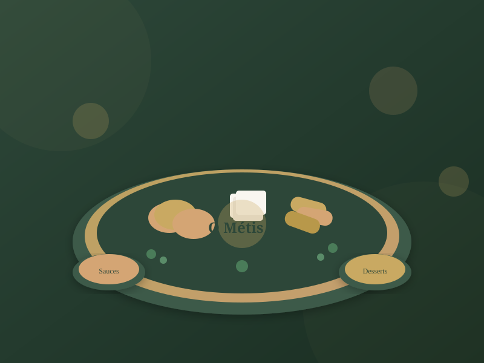
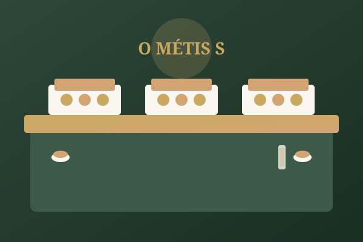
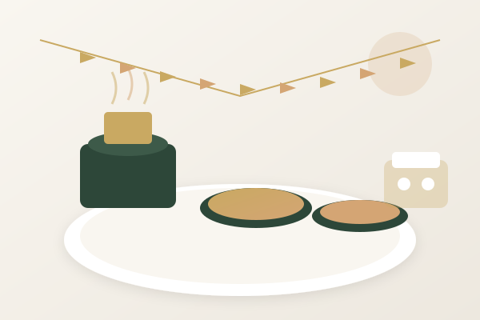
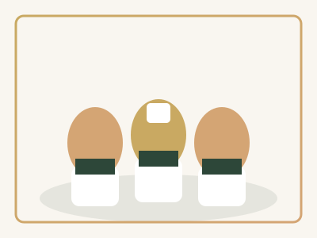
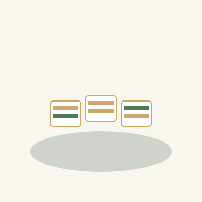

Mariages
Faites de votre jour J un moment inoubliable avec un buffet de cuisine réunionnaise raffinée. Du cocktail au dessert, nous créons une expérience gastronomique sur-mesure pour vous et vos convives à Saint-André et dans tout le 974.
Découvrez l'excellence de la cuisine réunionnaise pour tous vos événements. Du buffet traditionnel à la création sur-mesure, nous sublimons vos moments précieux avec authenticité et passion depuis 25 ans.

Années d'expérience
Que ce soit pour un mariage, un séminaire d'entreprise ou une fête privée, nous vous proposons des prestations adaptées à chaque occasion.
Faites de votre jour J un moment inoubliable avec un buffet de cuisine réunionnaise raffinée. Du cocktail au dessert, nous créons une expérience gastronomique sur-mesure pour vous et vos convives à Saint-André et dans tout le 974.

Séminaires, conférences, pots de départ ou fêtes de fin d'année : impressionnez vos collaborateurs et clients avec un service traiteur professionnel. Menus variés et présentation soignée garanties.

Anniversaires, baptêmes, cousinades ou simples réunions de famille : profitez pleinement de vos proches pendant que nous nous occupons de la gastronomie. Livraison et installation possible à domicile.

Fondé il y a plus de 25 ans à Saint-André, O Métis S by MétisSage est né d'une passion profonde pour la cuisine réunionnaise authentique. Notre fondateur, avec ses racines métisses, a su créer une cuisine qui célèbre les saveurs de La Réunion (974) tout en y apportant une touche de modernité.
Aujourd'hui, notre équipe de traiteurs professionnels perpétue cette tradition d'excellence. Chaque plat est préparé avec amour, en utilisant des produits frais et locaux dans la mesure du possible. Notre engagement : vous offrir une expérience culinaire mémorable, quelle que soit l'occasion.
Découvrez un aperçu de nos buffets et spécialités réunionnaises, préparés avec passion pour vos événements à Saint-André.

Découvrez les témoignages de nos clients satisfaits à Saint-André et dans toute La Réunion (974).
"O Métis S a traiteuré notre mariage à Saint-André et c'était absolument parfait ! Les invités ont adoré les samoussas et le riz grains. Un service professionnel et une cuisine délicieuse. Merci pour cette journée inoubliable !"
"Nous faisons appel à O Métis S pour tous nos événements d'entreprise depuis 3 ans. La qualité est toujours au rendez-vous, la livraison est ponctuelle et le staff est très sympathique. Je recommande vivement !"
"Pour l'anniversaire de ma mère, j'ai commandé un buffet complet. Tout le monde a été conquis par la qualité des plats réunionnais. Le gâteau patate en dessert était divin ! Merci MétisSage pour cette belle prestation."
Contactez O Métis S by MétisSage dès aujourd'hui pour discuter de votre projet. Devis personnalisé et sans engagement pour tous vos événements à Saint-André et dans tout le 974.